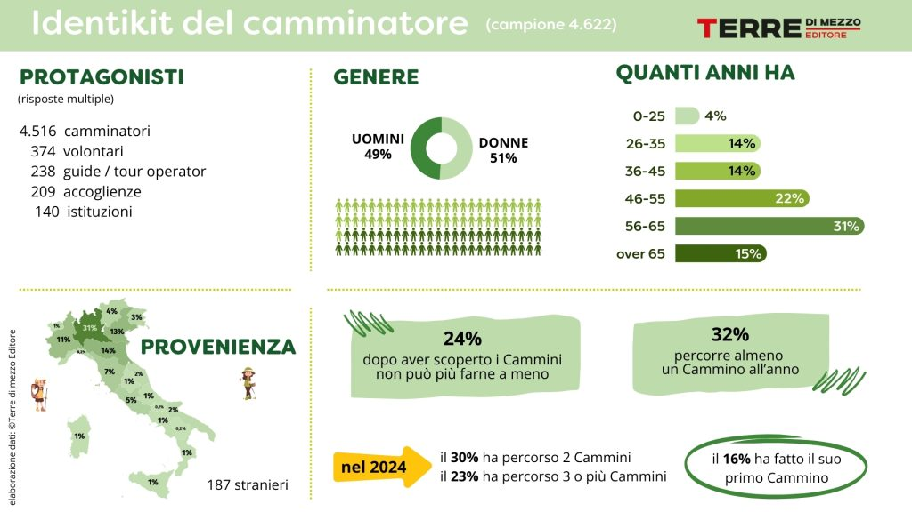
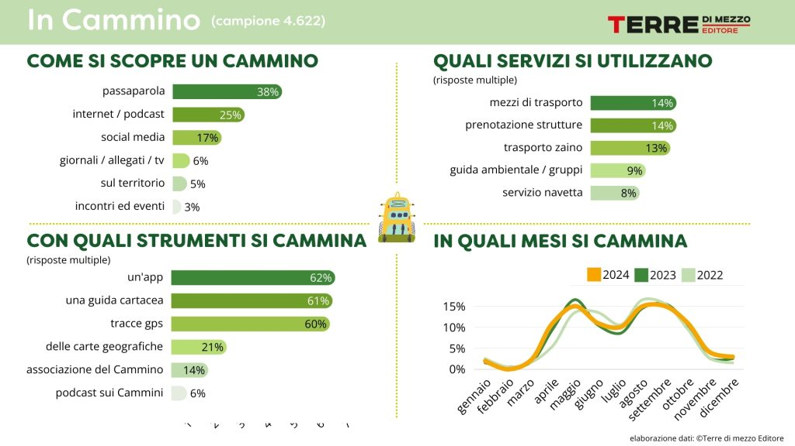

Le statistiche del cammino
Che camminare sia salutare si sa, ma quanto effettivamente camminiamo? Conoscere i dati reali ci permette di capire le abitudini dei camminatori, valorizzare i percorsi e pianificare meglio il nostro movimento quotidiano.
Camminare in Italia
Secondo le statistiche di Eurostat (Health-enhancing physical activity statistics), oltre l’80% degli europei sopra i 15 anni cammina almeno una volta alla settimana. Anche in Italia i Cammini stanno diventando un fenomeno in forte crescita. A questo proposito, la casa editrice Terre di Mezzo Editore ha raccolto 4.622 risposte tramite un questionario online, offrendo dati affidabili e confrontabili negli anni. E' emerso, ad esempio, che Nel 2024 i pernottamenti lungo i Cammini italiani hanno superato 1 milione e 435 mila, con un aumento del 6% rispetto al 2023. I camminatori certificati tramite Credenziali sono stati 122.338, ma i camminatori reali sono stimati almeno in 191.465, con un incremento del 29% rispetto all’anno precedente. La durata media dei percorsi si è leggermente ridotta a 7,5 giorni, ma i pernottamenti totali continuano a crescere, confermando l’importanza economica e territoriale di questo tipo di turismo.
Provenienza e motivazioni dei pellegrini
Tutte le Regioni italiane sono attraversate da Cammini regionali o interregionali, con maggiore concentrazione in Emilia Romagna, Toscana e Lazio. La maggior parte dei camminatori proviene dal Nord Italia: 31% Lombardia, 14% Emilia Romagna, 13% Veneto, 11% Piemonte. Le motivazioni sono varie: stare nella natura, vivere un’esperienza interiore, mantenersi in forma, conoscere nuovi territori e incontrare persone, con il 26% che cammina anche per motivi religiosi o spirituali.

Abitudini e organizzazione durante un cammino
Nel 2024 sono stati raccolti i dati da 160 cammini, e 122 hanno fornito informazioni sulle credenziali (il "passaporto" del pellegrino). La maggior parte delle credenziali, il 79%, quindi circa 8 su 10, è stata
consegnata direttamente ai camminatori, di persona.
Si è scoperto che il 26% percorre i Cammini da solo, il 39% in coppia e il resto in gruppo, con una leggera prevalenza femminile (51%). Rispetto al Cammino di Santiago de Compostela, i camminatori italiani sono più adulti: il 32% ha meno di
45 anni, il 53% tra 46 e 65 anni e il 15% oltre i 65 anni.
Per quanto riguarda la durata del cammino, il 40% cammina 2-4 settimane, il 23% da 3 giorni a 1 settimana, il 22% da 1 a 2 mesi e il 15% oltre due mesi. Prima di partire, il 47% acquista libri e guide, il 40% abbigliamento, il 39% attrezzature e il 34% scarpe.
Durante il percorso, il 77% si ferma a mangiare in ristorante. La maggioranza dei pernottamenti avviene in B&B o appartamenti (46%), seguiti da ostello (26%), albergo o agriturismo (16%) e ospitalità religiosa (6%), mentre il 30% degli under 25 lungo la Via degli
Dei sceglie la tenda. La spesa giornaliera varia da meno di 30€ (16%) fino a oltre 100€ (3%), mentre il 57% aggiunge qualche giorno di vacanza una volta completato il Cammino.
Analizzare queste statistiche permette di comprendere l’impatto economico e sociale dei Cammini, pianificare meglio percorsi e servizi, valorizzare i territori e promuovere uno stile di vita salutare e sostenibile.
